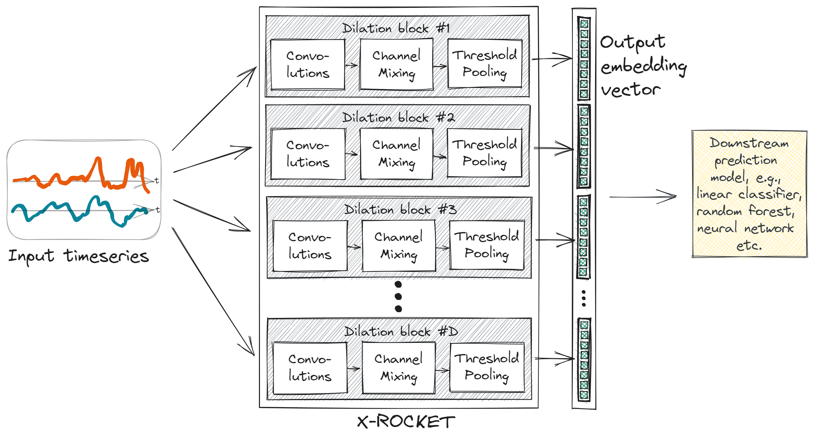

This page presents descriptions of some of the data projects I have been involved in.
Quality prediction based on time series data in a manufacturing context
In this machine learning use case in the manufacturing domain the task is to analyze large amounts of time series data recorded from production machines with regards to their predictive power when it comes to the quality of the final products. Finding useful patterns in the sensory recordings is challenging due to the large data quantities connected to a single outcome label. A main task here is filtering and connecting various data sources and combining the data in way that can be ingested by a PyTorch neural network model. Multiple predictive model architectures have been tested, spanning from simple statistical models to deep convolutional neural networks. An additional emphasis is on AI explainability since the production engineers are especially interested in making sense of the findings. My role in this project was mainly in conceptualizing and implementing data pipelines and predictive algorithms. Details about the employed model architecture can be found in a three-part article (parts one, two and three), and in the belonging code repository.

Machine status detection in 3D printing based on infrared image data
The goal of this project is to identify irregularities during an automated cleaning step in industrial additive manufacturing through computer vision techniques. A visual deep learning algorithm detects pollution of the production machine during the printing process, such that damage can be prevented and machine time is saved. A core challenge here is to deal with data heterogeneity among various production machines and limited data availability, which was tackled via approaches to data augmentation. More information about the machine learning use case and the overall project can be found here, here and here. As an auxiliary result, the labeling tool we created for the annotation of the image dataset is described in this article, and the belonging code is in this code repository. I contributed to this project in the development of the implemented solution and in the coordination with the project partners.
.jpg)
Automated question answering via retrieval of internal natural language documents
This line of work aimed to proof the concept of question answering based on internal documents and to gain experience with state-of-the-art NLP developments. An early demo using extractive question answering based on semantic search is still online here. Later stages explored full-fletched generative question answering with the help of large language models (LLMs) and retrieval augmented generation (RAG). My role in this project was to make contributions to the codebase and to update the involved developers about the latest trends in research and industry.

Estimation and analysis of financial variance spillover networks for academic research
As a basis for some of my research papers, substantial coding effort was necessary in the context of financial time series data. First, this project required extensive data acquisition from large databases via SQL. Then, the project samples representative data points and uses a data pre-processing pipeline to prepare estimation data over a rolling time interval. This repository implements various object-oriented programs (OOP) for the estimation of regularized statistical learning algorithms with cross-validation. Finally, there are various flavors of statistical analysis to obtain the empirical results of the research papers. The code in the repository is written by myself, with conceptual help of my co-author Ruben Hipp.

System to predict success of police searches and AI fairness analysis
This is a sample of work that I produced as a capstone project for the Lisbon data science academy (additional info in the wiki here). Given a tabular dataset of UK police data, the goal of this mock project is to come up with a machine learning model to approve police searches to maximize success rates while minimizing discrimination. The main tasks are to perform detailed exploratory data analysis (EDA) with regards to existing stop and search practices, to develop a prediction system to “authorize” searches such that biases are mitigated, and to deploy this system as an accessible application via a responsive API endpoint. More detailed reports about this project can be found here and here, with the respective code being hosted here and here. I prepared the implementation and analysis in this project by myself, which helped to develop good fundamentals in data science and machine learning pipelines.